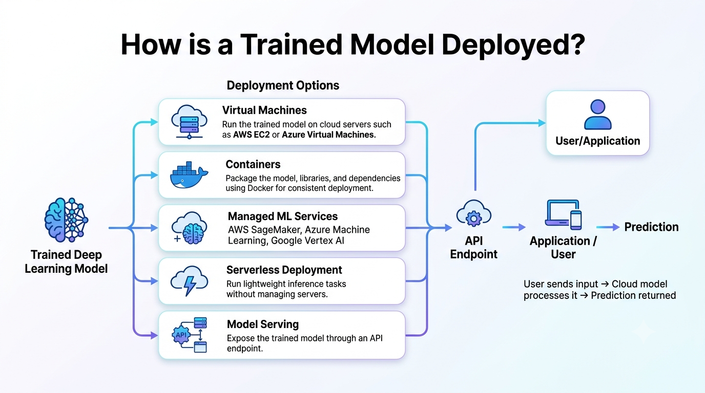
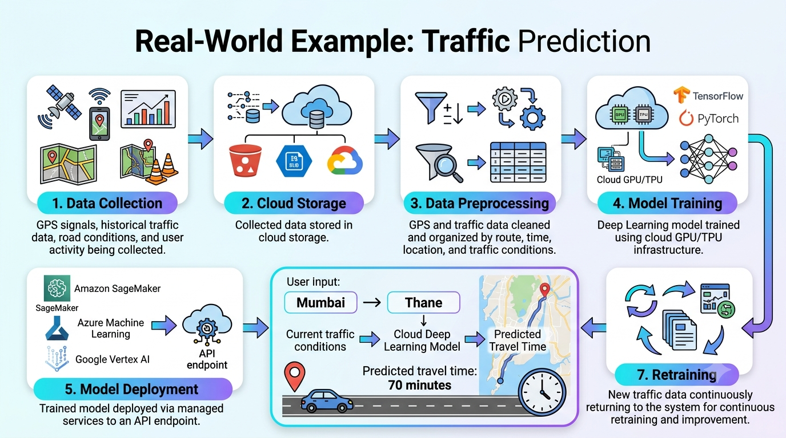

Cloud Computing: On-demand delivery of centralized computing resources, high-throughput network fabrics, and massive storage pools over the Internet.
Deep Learning (DL): A subfield of Machine Learning utilizing deep multi-layered neural networks to learn hierarchical representations from complex, unstructured datasets.
Collect raw multi-modal datasets (images, video streams, textual logs, telemetry) from distributed sources.
Store unstructured data in cloud object stores (Amazon S3, Azure Blob, GCS) with high availability.
Clean, normalize, tokenize, and format datasets using distributed ETL pipelines (Spark, Ray Data).
Provision specialized hardware (NVIDIA H100/A100 GPUs, Google TPUs) tailored to training requirements.
Execute distributed training jobs across multi-GPU/multi-node clusters using PyTorch or TensorFlow.
Perform automated hyperparameter tuning (Bayesian search) and model compression (quantization, pruning).
Register model artifacts and serve predictions via auto-scaling REST/gRPC API endpoints.
Amazon SageMaker: Fully managed platform for building, training, tuning, and hosting ML models.
EC2 Compute Instances: GPU-accelerated instances (P4/P5 families with NVIDIA H100s, Trn1 Trainium instances).
Storage & Data Services: Amazon S3 for object storage and FSx for Lustre for high-performance training input.
Target Use Case: Broadest ecosystem for enterprise and large-scale custom ML deployments.
Azure Machine Learning: Integrated enterprise platform supporting the entire MLOps lifecycle.
Virtual Machines: N-series VM sizes equipped with NVIDIA GPUs for heavy AI computing.
Blob Storage & Data Lake: Scalable storage integration with Enterprise Azure analytics tooling.
Target Use Case: Seamless integration with existing Microsoft enterprise software and hybrid cloud stacks.
Vertex AI: Unified platform simplifying data engineering, training, and deployment workflows.
Compute Engine & TPUs: Direct access to custom TPU v4/v5e pods and GPU instances for heavy parallelization.
Cloud Storage & BigQuery: Deep integration with data warehousing and real-time analytics platforms.
Target Use Case: Advanced AI research, large language model training, and TPU acceleration.
Deploy models directly onto instances like AWS EC2 or Azure VMs. Offers full OS control, but requires manual OS patching and scaling setup.
Package the model, weights, and runtime dependencies inside Docker containers. Managed using Kubernetes (EKS, GKE) for high availability and load balancing.
Use platform-native serving capabilities (SageMaker Endpoints, Vertex AI Serving) that handle automated instance provisioning, scaling, and rolling updates.
Execute low-latency inference using serverless platforms (AWS Lambda, Azure Functions) where execution triggers on-demand without managing server uptime.
Expose models via RESTful APIs or high-performance gRPC channels. Real-time endpoint serving generates low-latency responses for interactive apps, while batch inference pipelines process large datasets offline asynchronously.
User Request: Client application requests ETA for a specific route.
Inference Engine: Served API endpoint evaluates current conditions against stored model weights.
Feedback & Retraining Loop: Actual arrival times are streamed back into cloud storage to trigger scheduled automated retraining cycles when accuracy drifts.

End-to-End Architecture: Model Training Pipeline -> Cloud Deployment -> API Gateway -> Client Request/Response Handling

Iterative Feedback Mechanism: Streaming Incoming Data -> Real-Time Inference -> Data Storage -> Automated Retraining Loop
Continuous GPU/TPU utilization incurs heavy costs. Mitigation strategies include using Spot/Preemptible instances and auto-scaling rules.
Transferring multi-terabyte datasets to the cloud consumes network bandwidth. Inference APIs must maintain strict SLA latency limits (<100ms).
Protecting proprietary model weights and sensitive training data requires rigorous IAM policies, network isolation (VPCs), and encryption.
Proprietary APIs and platform-specific services make migrating pipelines across different cloud providers challenging without containerization.
Real-world data distribution shifts over time (concept drift). Continuous monitoring systems are required to track latency, throughput, and accuracy metrics.
Matching workload complexity to correct CPU/GPU/TPU specifications is critical to avoid hardware bottlenecks or underutilized capacity.